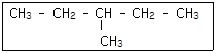
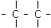
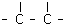
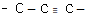
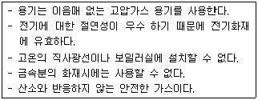
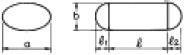
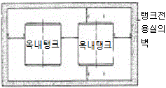

위험물산업기사 (2005-05-29 기출문제)
1과목: 일반화학
1. 100mL 메스플라스크로 10ppm용액 100mL를 만들려고 한다. 1000ppm용액 몇 mL를 취해야 하는가?
- 1
- 2
- 9
- 10
(정답률: 71%)

2. 다음 가스 중 밀도가 가장 큰 것은? (단, 공기 평균분자량은 29 이고, 산소, 질소, 탄소, 수소의 원자량은 각각 16,14, 12, 1 임.)
- 산소
- 질소
- 이산화탄소
- 수소
(정답률: 60%)
3. 다음 화학식의 올바른 명명법은?

- 3 - 메틸펜탄
- 2, 3, 5 - 트리메틸 헥산
- 이소부탄
- 1,4 - 헥산
(정답률: 80%)
4. 탄소사이의 결합 길이가 가장 짧은 것은?



(정답률: 55%)
5. 다음 중 염(salt)을 만드는 화학반응식이 아닌 것은?
- HCl + NaOH → NaCl + H2O
- Zn + H2SO4 → ZnSO4 + H2
- CuO + H2 → Cu + H2O
- H2SO4 + MgO → MgSO4 + H2O
(정답률: 68%)
6. 0.0016N에 해당하는 염기의 pH값은 얼마인가?
- 10.28
- 3.20
- 11.20
- 2.80
(정답률: 45%)
7. 미지의 유기 화합물 5.0g을 80.0g의 초산에 녹였을 때 초산의 어는점이 1.35℃ 내려갔다. 이 미지시료의 분자량은 얼마인가? [단, 초산의 어는점 내림상수, Kf = -3.90℃/m이다.]
- 90g/mol
- 120g/mol
- 150g/mol
- 180g/mol
(정답률: 36%)
8. 다음 금속 중에서 아말감을 만들 수 있는 금속은?
- Pt
- Fe
- Ni
- Ag
(정답률: 48%)
9. CH4, NH3 및 H2O의 결합각은 각각 109°, 107°, 1⑤° 의 순으로 작아진다. 그 이유는 무엇인가?
- 분자간의 거리
- 이온화 전위
- 수소결합
- 비공유 전자쌍
(정답률: 55%)
10. 다음 중 순수한 물질로만 구성되어 있는가를 알고자 할 때는 어느 것을 조사해야 하는가?
- 밀도
- 융점
- 겉모양
- 용해성
(정답률: 46%)
11. 다음은 엔트로피를 증가시키는 과정들에 대한 설명(예)이다. 잘못된 것은?
- 액체의 고화
- 순수한 액체가 증발하는 과정
- 큰 분자를 작은 분자로 쪼개는 과정
- 계에 있는 기체의 몰수를 증가시키는 과정
(정답률: 57%)
12. 1N-H2SO4용액으로 물 1000mL에 NaOH 4g이 녹아 있는 용액을 중화시키려 한다. 1N-H2SO4 몇 mL가 필요한가? (단, Na=23, S=32, O=16, H=1이다.)
- 1000mL
- 100mL
- 50mL
- 25mL
(정답률: 48%)
13. 어떤 온도에서 0.1M의 아세트산의 이온화도(α)는 1%이다. 이때 수소이온농도(또는 H3O+)는 몇 M인가?
- 0.1M
- 0.01M
- 0.001M
- 0.0001M
(정답률: 51%)
14. 다음 중 벤젠의 유도체가 아닌 것은?
- 아닐린
- 피크린산
- 톨루엔
- 폴리비닐클로로
(정답률: 52%)
15. 축중합반응에 의하여 나일론을 제조할 때 사용되는 것은?
- 아디프산과 헥사메틸렌디아민
- 이소프렌과 아디프산
- 염화비닐과 폴리에틸렌
- 멜라민과 헥사메틸렌디아민
(정답률: 55%)
16. 다음은 원자의 화학 결합력의 세기를 설명한 것이다. 이중맞는 것은?
- 공유결합은 수소결합보다 크나 이온결합보다 작다.
- 이온결합은 원자결합보다 크나 수소결합보다 작다.
- 원자결합은 이온결합 및 수소결합보다 크다.
- 수소결합은 원자결합, 공유결합보다 적으나 이온결합보다 크다.
(정답률: 37%)
17. 석영, 유리가 질산이나 황산에는 침식되지 않으나 HF에는 침식되는 이유로 올바르게 설명한 것은?
- HF는 HNO3 나 H2SO4보다 강산이기 때문이다.
- HF는 SiO2 와 반응하여 SiF4가 생성되기 때문이다.
- HNO3와 H2SO4는 환원성 산이기 때문이다.
- HNO3와 H2SO4는 산소를 발생하기 때문이다.
(정답률: 39%)
18. CuSO4용액에 0.5F의 전자를 흘렸을때 약 몇 g의 구리가 석출되겠는가? (단, 원자량 Cu:64, S:32, O:16 임.)
- 16
- 32
- 64
- 128
(정답률: 54%)
19. 다음 금속을 질산은(AgNO3)용액에 담갔을 때 그 표면에 은(Ag)이 석출되지 않는 것은?
- 백금
- 납
- 구리
- 아연
(정답률: 79%)
20. 원자번호 35인 브롬의 원자량은 80 이다. 브롬의 중성자수는 몇개인가?
- 35개
- 40개
- 45개
- 50개
(정답률: 85%)
2과목: 화재예방과 소화방법
21. 위험물 중에서 염소산염류와 같은 산화성고체는 제 몇류 위험물에 속하는가?
- 제1류 위험물
- 제2류 위험물
- 제3류 위험물
- 제4류 위험물
(정답률: 78%)
22. 전역방출방식인 제3종 분말소화설비에서 방호구역의 체적 1m3당 소화약제의 양은?
- 0.24kg
- 0.36kg
- 0.5kg
- 0.7kg
(정답률: 38%)
23. 화재 발생 시 산소공급원이 될 수 있는 위험물은?
- 제1류 위험물, 제2류 위험물, 제3류 위험물
- 제2류 위험물, 제4류 위험물, 제5류 위험물
- 제3류 위험물, 제5류 위험물, 제6류 위험물
- 제1류 위험물, 제5류 위험물, 제6류 위험물
(정답률: 65%)
24. 옥내소화전설비의 기준으로 옳지 않은 것은?
- 각 배관은 겸용으로 쓰는 것이 가능하도록 설치할 것
- 시동표시등은 적색으로 하고 소화전함의 내부 또는 그 직근의 장소에 설치할 것
- 개폐밸브는 바닥면으로부터 1.5m 이하의 높이에 설치할 것
- 비상전원은 유효하게 45분 이상 작동시키는 것이 가능할 것
(정답률: 65%)
25. 수성막포 소화약제를 주제로 한 기계포소화기를 사용하여 소화 시 가장 소화효과가 없는 화재는?(오류 신고가 접수된 문제입니다. 반드시 정답과 해설을 확인하시기 바랍니다.)
- 경유화재
- 중유화재
- 목재화재
- 알콜화재
(정답률: 57%)
26. 이산화탄소 소화기 사용 중 소화기 방출구에서 생길 수 있는 물질은?
- 포스겐
- 일산화탄소
- 드라이아이스
- 수소가스
(정답률: 83%)
27. 강화액 소화기의 주성분은?
- 물과 탄산칼륨
- CO2 와 물
- 황산과 탄산수소나트륨
- 물과 사염화탄소
(정답률: 63%)
28. 다음 설명에 적합한 소화기는?

- 할론 소화기
- 이산화탄소 소화기
- 분말소화기
- 강화액소화기
(정답률: 71%)
29. 제5류 위험물의 소화방법으로 가장 적당한 것은?
- 소화분말
- 다량의 물
- 탄산가스
- 사염화탄소
(정답률: 81%)
30. 자기반응성 물질인 제5류 위험물의 화재예방에 관한 사항으로 옳지 않은 것은?
- 습기에 주의하여 저장한다.
- 차고 어두운 곳에 저장한다.
- 통풍이 잘 안되는 곳에 보관한다.
- 저장시에는 가열, 충격, 마찰을 피해야한다.
(정답률: 79%)
31. 설치된 소화기에 "B-2" 라고 표시되어 있다면 이것이 의미하는 것은?
- B형 수동소화기 2형에 적용되는 소화기
- B형 자동소화기 2형에 적용되는 소화기
- B급화재 능력단위 2단위에 적용되는 소화기
- 간이형 소화기 2형에 적용되는 소화기
(정답률: 82%)
32. 할로겐화합물 소화약제 중 상온에서 액체이며 저장용기에 충전할 경우에는 방출원인 질소(N2)와 함께 충전하여야하며 기체 비중이 가장 높은 것은?
- 할론1011
- 할론1301
- 할론1211
- 할론2402
(정답률: 52%)
33. 화학포소화기의 포핵은?
- 질소
- 공기
- 암모니아
- 이산화탄소
(정답률: 49%)
34. 제2류 위험물인 금속분류, 철분 또는 마그네슘의 화재 시 소화 방법으로 적당한 것은?
- 대량주수에 의한 냉각소화
- 물에 의한 질식소화
- 인화점 이하로 냉각소화
- 마른모래에 의한 피복소화
(정답률: 83%)
35. 제1류 위험물중 알칼리금속의 과산화물을 저장하는 창고에 표시하여야 하는 주의사항은?
- 화기엄금
- 물기엄금
- 화기주의
- 물기주의
(정답률: 74%)
36. 제3종 분말 소화약제의 표시 색상은?
- 백색
- 담홍색
- 검은색
- 회색
(정답률: 83%)
37. 이산화탄소소화설비의 소화약제 방출방식 중 전역방출방식 소화설비에 대한 설명으로 옳은 것은?
- 발화위험 및 연소위험이 적고 광대한 실내에서 특정장치나 기계만을 방호하는 방식
- 전체에 방출할 필요가 있는 경우 당해 부분의 구획을 밀폐하여 불연성가스를 방출하는 방식
- 일반적으로 개방되어져 있는 대상물에 대하여 설치하는 방식
- 사람이 용이하게 소화활동을 할 수 있는 장소에는 호스를 연장하여 소화활동을 행하는 방식
(정답률: 65%)
38. 자연발화를 예방하기 위한 방법으로 가장 옳은 것은?
- 습도를 낮추어 건조하게 한다.
- 산화 발열반응을 일으키는 물질은 표면적을 크게한다.
- 열전도율을 줄인다.
- 물질을 여러층으로 적층하여 보관한다.
(정답률: 50%)
39. 소화약제로 사용되지 않는 화합물은?
- CF2CIBr
- NaHCO3
- Na2SO4
- Al2(SO4)2
(정답률: 43%)
40. CaC2 는 물이나 습기에 닿으면 C2H2 가스를 발생하며 반응이 급격할 때는 착화폭발 한다. 이 화재 시 소화기로서 가장 적당하지 않는 것은?
- 포말소화기
- 분말소화기
- 팽창질석
- 마른모래
(정답률: 63%)
3과목: 위험물의 성질과 취급
41. 동.식물유의 저장 및 취급방법으로 올바르지 못한 것은?
- 액체 누설에 주의하고 화기접근을 금한다.
- 인화점 이상으로 가열하지 않도록 주의한다.
- 건성유는 섬유류 등에 스며들지 않도록 한다.
- 불건성유는 공기중에서 쉽게 굳어지므로 질소가스를 퍼지 시켜 취급한다.
(정답률: 79%)
42. 그림과 같은 탱크에 대한 부피의 계산식이 맞는 것은? (문제 오류로 복원중입니다. 정답은 2번입니다. 여기서는 2번을 누르면 정답 처리 됩니다.)

- 복원중
- 복원중
- 복원중
- 복원중
(정답률: 68%)
43. 제4류 위험물의 일반적 취급상 주의사항으로 옳은 것은?
- 화기가 없어도 정전기가 축적되어 있으면 방전하여 착화할 우려가 있으므로 축적되지 않게 할 것
- 위험물이 유출하였을때 액면이 확대되지 않게 흙등으로 잘 조치한 후 자연증발 시킬 것
- 물에 녹지 않는 위험물은 폐기할 경우 물을 섞어 하수구에 버린다.
- 증기의 배출은 지표로 향해서 할 것
(정답률: 59%)
44. 메틸알코올(methyl alcohol)의 비등점은?
- 30℃
- 65℃
- 78℃
- 100℃
(정답률: 34%)
45. 다음 물질 중 장기간 저장시 암갈색의 폭발성 물질로 변하는 것은?
- (CH3CO)2O
- Br2
- HNO3
- HCN
(정답률: 31%)
46. 인화칼슘(Ca3P2)의 위험성으로 옳은 것은?
- 물과 반응해서 수소를 발생한다.
- 산소와 반응해서 불연성의 시안가스를 발생한다.
- 물과 반응해서 독성이 있는 가연성 기체를 발생한다.
- 물과 맹렬히 반응해서 유독한 아황산가스를 발생한다
(정답률: 72%)
47. 칼륨의 성질중 틀린 것은?
- 비중이 작아지므로 석유속에 저장한다.
- 물이나 알코올과 반응성이 커서 쉽게 반응한다.
- 융점 이상의 온도에서 보라빛 불꽃을 내면서 연소한다.
- 은백색 광택의 단단한 중금속으로 화학적 활성이 작다.
(정답률: 63%)
48. 제3류 위험물의 일반적 성질을 설명한 것 중 옳은 것은?
- 물에 의한 냉각소화가 가능하다.
- 알킬알루미늄, 나트륨, 금속수소화물은 비중이 물보다 무겁다.
- 제3류 위험물은 모두 무기화합물로 구성되어 있다.
- 황린을 제외하고 모든 품목은 물과 반응하여 가연성 가스를 발생한다.
(정답률: 52%)
49. 다음 제4류 위험물 중 인화점이 가장 낮은 것은?
- 가솔린
- 아세트알데히드
- 산화프로필렌
- 에테르
(정답률: 39%)
50. 다음 그림은 옥내탱크의 간격을 표시한 그림이다. ( )의 간격은 얼마 이상으로 하여야 하는가?

- 30cm
- 40cm
- 50cm
- 60cm
(정답률: 67%)
51. 다음 위험물중에서 착화온도가 가장 낮은 것은?
- 황린
- 황화린
- 마그네슘
- 실린더유
(정답률: 53%)
52. 제5류 위험물인 니트로셀룰로오스의 지정수량은?
- 10kg
- 50kg
- 100kg
- 200kg
(정답률: 35%)
53. 제1류 위험물중 물과 반응하여 발열하는 것은?
- 염소산나트륨
- 과산화나트륨
- 과망간산칼륨
- 질산암모늄
(정답률: 60%)
54. 아세트알데히드의 성질이 잘못 설명한 것은?
- 휘발성을 가진 무색의 액체이며 자극성 냄새가 있다.
- 물에 잘 녹으며 에탄올이나 에테르와 잘 혼합한다.
- 산화되어 초산으로 된다.
- 산과 접촉 중합하여 흡열한다.
(정답률: 38%)
55. 다음 시약중에서 비(불)휘발성 물질은?
- 염산
- 질산
- 아세트산
- 황산
(정답률: 24%)
56. 벤조일퍼옥사이드(BPO)의 저장 및 취급 사항에 관한 설명이다. 틀린 것은?
- 이물질의 혼입을 방지한다.
- 저장용기에 희석제를 넣어서 폭발의 위험성을 낮춘다.
- 직사광선차단, 마찰 및 충격 등의 물리적 에너지원을 배제한다.
- 많은 양 저장시 열흡수제인 디메디틸아민, 황화디메틸을 첨가하여 저장한다.
(정답률: 51%)
57. 다음 위험물 중 증기 비중이 가장 큰 것은? (단, 공기의 평균 분자량은 29이고, C, H, O의 원자량은 각각 12, 1, 16이다.)
- CH3COOC2H5
- CH3(CH2)4CH3
- CH3(CH2)5CH3
- CH3(CH2)7CH3
(정답률: 61%)
58. 다음 위험물 중 물과 접촉 시켰을때 위험성이 가장 큰 것은?
- 칠황화린
- 중크롬산칼륨
- 질산암모늄
- 알킬알루미늄
(정답률: 68%)
59. 다음 물질 중 물과 반응하여 가연성가스인 아세틸렌이 발생되지 않는 것은?
- Na2C2
- CaC2
- MgC2
- Be2C
(정답률: 51%)
60. 염소산칼륨에 관한 설명 중 옳지 못한 것은?
- 강산화제로 가열에 의해 분해하여 산소를 방출한다.
- 무색, 무취의 결정 또는 분말이다.
- 물(온수)에 녹지 않는다.
- 글리세린에 녹는다.
(정답률: 54%)